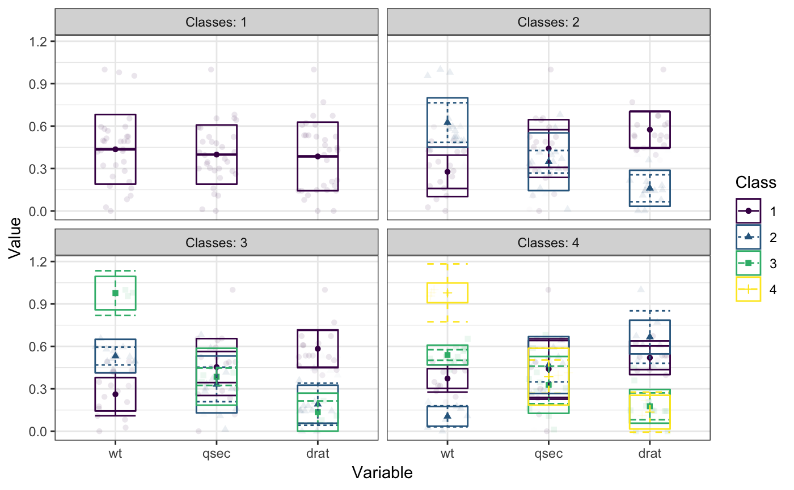

plot_profiles.RdCreates a profile plot according to best practices, focusing on the visualization of classification uncertainty by showing:
Bars reflecting a confidence interval for the class centroids
Boxes reflecting the standard deviations within each class; a box encompasses +/- 64% of the observations in a normal distribution
Raw data, whose transparancy is weighted by the posterior class probability, such that each datapoint is most clearly visible for the class it is most likely to be a member of.
plot_profiles(x, variables = NULL, ci = 0.95, sd = TRUE, add_line = TRUE, rawdata = TRUE, bw = FALSE, alpha_range = c(0, 0.1), ...) # S3 method for default plot_profiles(x, variables = NULL, ci = 0.95, sd = TRUE, add_line = TRUE, rawdata = TRUE, bw = FALSE, alpha_range = c(0, 0.1), ...) # S3 method for tidyLPA plot_profiles(x, variables = NULL, ci = 0.95, sd = TRUE, add_line = TRUE, rawdata = TRUE, bw = FALSE, alpha_range = c(0, 0.1), ...)
| x | An object containing the results of a mixture model analysis. |
|---|---|
| variables | A character vectors with the names of the variables to be plotted (optional). |
| ci | Numeric. What confidence interval should the errorbars span? Defaults to a 95% confidence interval. Set to NULL to remove errorbars. |
| sd | Logical. Whether to display a box encompassing +/- 1SD Defaults to TRUE. |
| add_line | Logical. Whether to display a line, connecting cluster centroids belonging to the same latent class. Defaults to TRUE. Note that the information conveyed by such a line is limited. |
| rawdata | Should raw data be plotted in the background? Setting this to TRUE might result in long plotting times. |
| bw | Logical. Should the plot be black and white (for print), or color? |
| alpha_range | The minimum and maximum values of alpha (transparancy) for the raw data. Minimum should be 0; lower maximum values of alpha can help reduce overplotting. |
| ... | Arguments passed to and from other functions. |
An object of class 'ggplot'.
# Example 1 # Example 2mtcars %>% subset(select = c("wt", "qsec", "drat")) %>% poms %>% estimate_profiles(1:4) %>% plot_profiles(add_line = F)